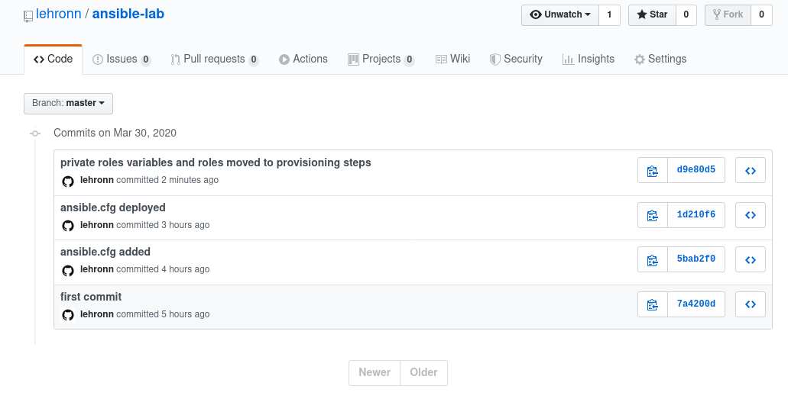

Conversation with 2345422802147713 at pon, 30 mar 2020, 20:18:37 on mateusz.stomski (facebook)
(20:18:37) Mateusz Stomski: i pełne wersjonowanie, w każdej chwili mogę wrócić do poprzedniego commita :D
(20:19:00) Mateusz Stomski: 
(20:19:24) Mateusz Stomski: porównać zmiany między commitami itd
(20:21:32) Mateusz Stomski: a najlepsze jest to że jak chcesz wdrożyc teraz tego mojego ansibla to wystarczą dwie komendy :D sudo dnf install git ansible i git clone adresREPOzGITa